![Logo Rougegorge]()
1À quoi servent ces outils ?
Ces outils permettent de préparer un inventaire dans Winstore en quelques clics : vous choisissez les articles à compter, l'outil crée l'inventaire pour vous. Il ne vous reste plus qu'à compter les articles, comme d'habitude.
Il existe trois inventaires, selon ce que vous souhaitez compter :
Inventaire à la saison
Les articles en stock, classés par saison (par exemple « Automne / Hiver 2025 »).
Quand ? Pour compter tout ou partie d'une ou plusieurs collections.
Inventaire Prix Ronds
Les articles concernés par une opération « Prix Rond » en cours, et présents en stock.
Quand ? Pendant ou avant une opération Prix Rond.
Inventaire stock négatif
Les articles dont le stock est négatif dans Winstore (stock « en dessous de zéro »).
Quand ? Pour corriger les stocks incohérents.
Les trois inventaires s'utilisent exactement de la même façon. Seul l'inventaire à la saison a une petite particularité, expliquée au chapitre 6.
2Les règles d'or
3Ouvrir un inventaire
- Ouvrez l'application Outils Inventaires depuis le menu Outils > Fonctions externes du logiciel de caisse.
- La fenêtre Inventaires s'affiche avec les trois inventaires. Cliquez sur l'inventaire que vous souhaitez réaliser.
- Un écran « Veuillez patienter » s'affiche quelques secondes, le temps de rechercher les articles.
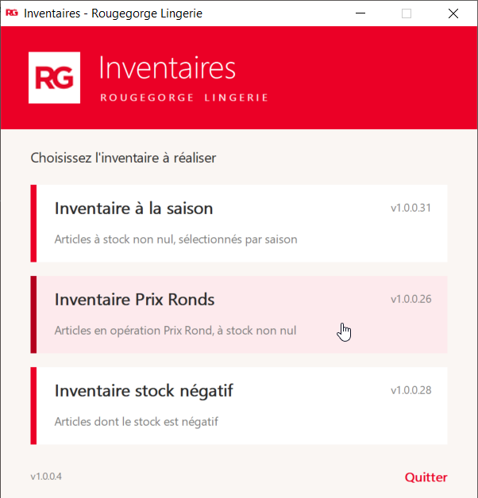
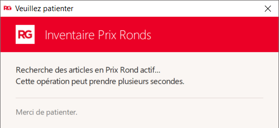
4Découvrir l'écran
L'écran est le même pour les trois inventaires. Voici ce que vous y trouvez, de haut en bas :
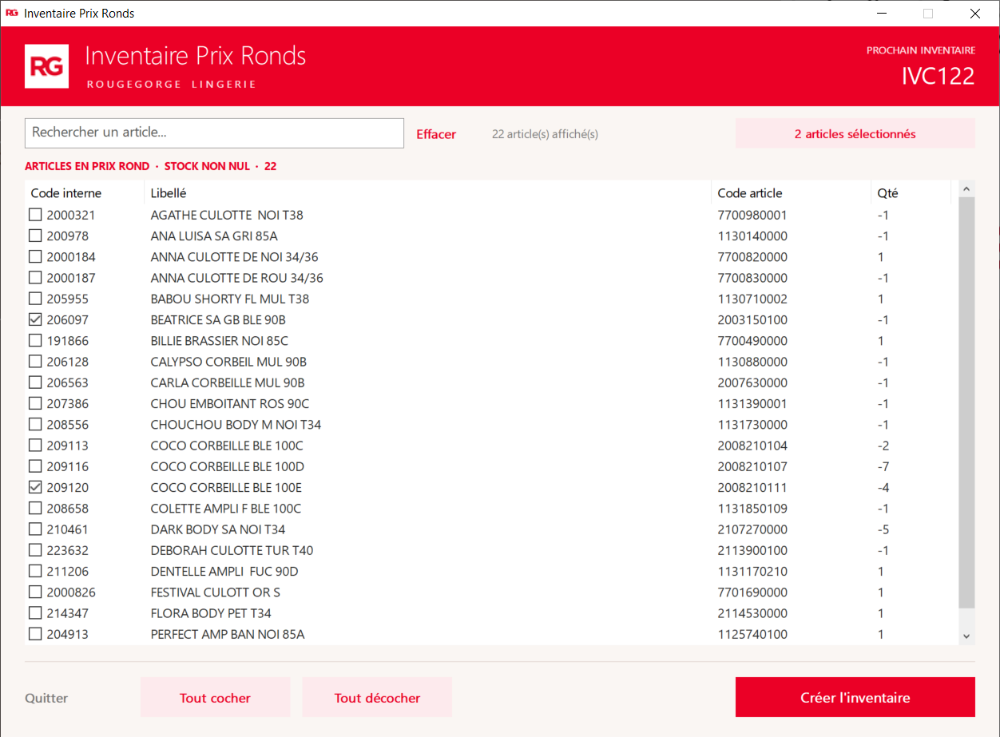
- Bandeau rouge
- Le nom de l'inventaire et, à droite, le numéro du prochain inventaire (par exemple IVC127).
- Rechercher un article…
- Tapez une partie du nom d'un article pour filtrer la liste. Le lien Effacer vide la recherche.
- Pastille rose
- Le nombre total d'articles cochés, même ceux cachés par une recherche. 12 articles sélectionnés
- Liste des articles
- Une ligne par article : code interne, libellé, code article et quantité en stock. Cochez la case pour sélectionner l'article.
- Boutons du bas
- Quitter, Tout cocher, Tout décocher et Créer l'inventaire.
5Choisir les articles
Cocher des articles
Cliquez sur la case à gauche de chaque article à compter. La pastille rose se met à jour.
Tout sélectionner
Tout cocher coche toutes les lignes affichées à l'écran.
Rechercher un article
- Cliquez dans le champ Rechercher un article… et tapez une partie du nom (par exemple dentelle).
- La liste n'affiche plus que les articles correspondants. Cochez ceux qui vous intéressent, ou cliquez sur Tout cocher.
- Cliquez sur Effacer pour revoir toute la liste.
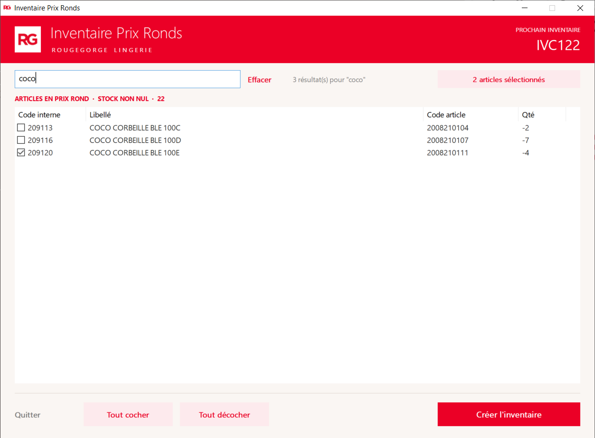
Tout décocher
Tout décocher agit différemment selon la situation :
| Situation | Ce qui est décoché |
|---|---|
| Une recherche est en cours | Uniquement les résultats affichés. Vos autres articles cochés sont conservés. |
| Pas de recherche (champ vide) | Toute votre sélection. Pour l'inventaire à la saison, une confirmation vous est demandée si des articles d'autres saisons sont cochés. |
Trier la liste
Cliquez sur le titre d'une colonne (Libellé, Qté…) pour trier la liste. Cliquez de nouveau pour inverser l'ordre. Vos cases cochées ne bougent pas.
6Particularités de l'inventaire à la saison
L'écran est découpé en deux : les saisons à gauche, les articles à droite.
- Cliquez sur une saison à gauche : ses articles s'affichent à droite.
- Cochez les articles de cette saison.
- Vous pouvez ensuite cliquer sur une autre saison et cocher d'autres articles : votre première sélection est conservée.
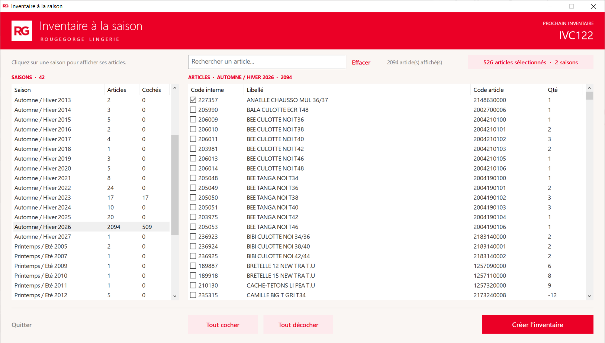
7Créer l'inventaire
- Quand votre sélection est prête, cliquez sur Créer l'inventaire.
- Un message vous demande de confirmer et vous rappelle le nombre d'articles. Vérifiez puis cliquez sur Oui.
- La fenêtre Création de l'inventaire en cours s'affiche. Patientez sans rien fermer : cela peut prendre jusqu'à 2 minutes.
- La fenêtre se ferme toute seule : l'inventaire est créé dans Winstore, et la fenêtre « Inventaires » revient devant vous.
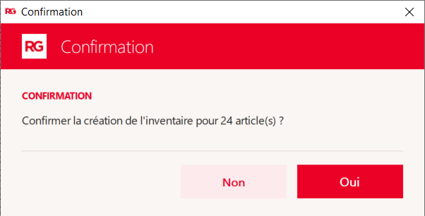
Plus de 350 articles ?
Pour des raisons techniques, un inventaire Winstore ne peut pas dépasser 350 articles. Si vous en cochez davantage, l'outil découpe automatiquement votre sélection en plusieurs inventaires. Le message de confirmation vous l'indique.
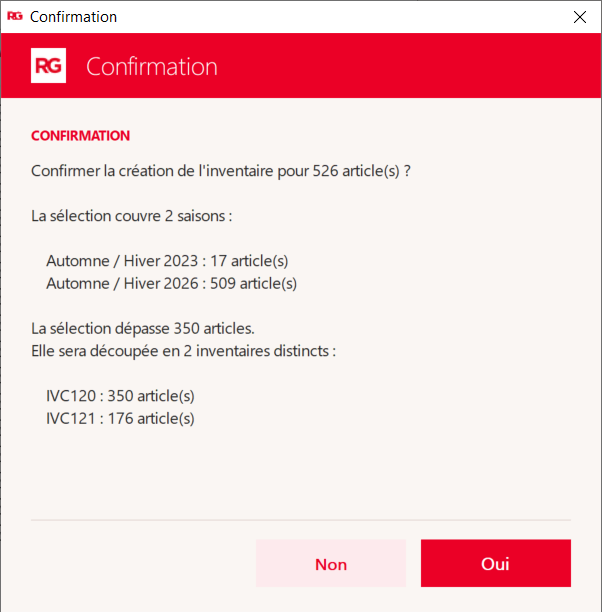
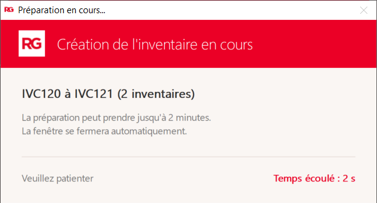
8Retrouver l'inventaire dans Winstore
Dans Winstore, votre inventaire porte un nom qui indique d'où il vient :
| Inventaire | Nom dans Winstore |
|---|---|
| Inventaire à la saison | Inv. Saison - 1 sur 1 |
| Inventaire Prix Ronds | Inv. Prix Rond - 1 sur 1 |
| Inventaire stock négatif | Inv. Stock Neg - 1 sur 1 |
Quand la sélection a été découpée, chaque inventaire indique sa place : pour 800 articles, vous trouverez « 1 sur 3 », « 2 sur 3 » et « 3 sur 3 ». Pensez à compter les trois !
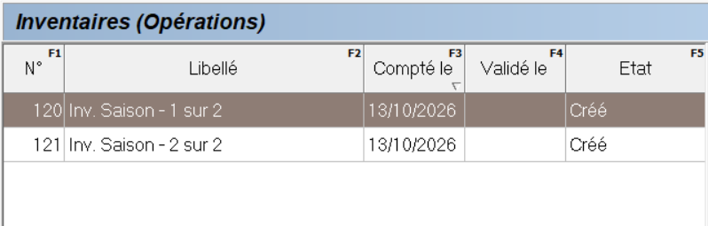
9Les messages et que faire
Voici les messages que vous pouvez rencontrer. Les messages rouges (ERREUR) nécessitent d'appeler la Hotline.
| Message | Ce que cela veut dire | Que faire ? |
|---|---|---|
| « Aucun article coché. » | Vous avez cliqué sur Créer l'inventaire sans rien cocher. | Cliquez sur OK, cochez des articles, puis recommencez. |
| « L'inventaire X est déjà ouvert. Terminez-le ou fermez-le avant d'ouvrir l'inventaire Y. » | Un autre inventaire est déjà ouvert sur ce poste. | Cliquez sur OK : l'inventaire déjà ouvert revient devant vous. Terminez-le ou fermez-le, puis ouvrez le nouveau. |
| « Une intégration est déjà en cours. Réessayez dans une minute. » | Un inventaire est en train d'être créé dans Winstore. | Patientez une minute puis cliquez de nouveau sur Créer l'inventaire. Votre sélection est conservée. Si le message revient, appelez la Hotline. |
| « Décocher la totalité des X article(s) sélectionné(s) ? » | Vous allez tout décocher, y compris des articles d'autres saisons. | Oui pour tout décocher, Non pour garder votre sélection. |
| ERREUR « L'inventaire n'a pas pu être intégré. » | Winstore n'a pas créé l'inventaire dans le délai prévu. | Appelez la Hotline en précisant l'heure. Ne relancez pas l'inventaire. |
| ERREUR « Impossible de se connecter à la base. » | L'outil n'arrive pas à joindre Winstore. | Appelez la Hotline. |
| ERREUR « Cette application est introuvable. » | Un inventaire n'est pas installé correctement sur ce poste (sa carte est grisée). | Appelez la Hotline. |
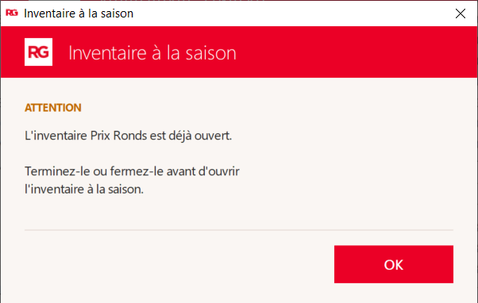
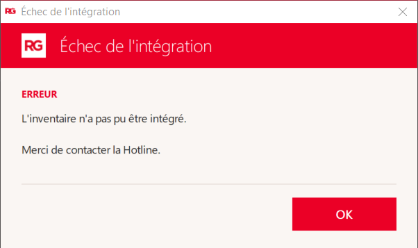
10Questions fréquentes
J'ai fermé la fenêtre par erreur avant de créer l'inventaire, ma sélection est-elle perdue ?
J'ai lancé une recherche et je ne vois plus mes articles cochés. Sont-ils perdus ?
Pourquoi l'outil a-t-il créé plusieurs inventaires ?
Je ne trouve pas un article dans la liste.
La création prend du temps, est-ce normal ?
Le numéro du prochain inventaire (IVC…) a changé pendant que je travaillais.
11Aide-mémoire
Cette page peut être imprimée et affichée près du poste.
- Ouvrez Inventaires et cliquez sur l'inventaire souhaité.
- Cochez les articles (utilisez la recherche si besoin).
- Vérifiez la pastille rose : c'est le nombre total d'articles cochés.
- Cliquez sur Créer l'inventaire puis sur Oui.
- Patientez jusqu'à la fermeture de la fenêtre (2 minutes maximum).